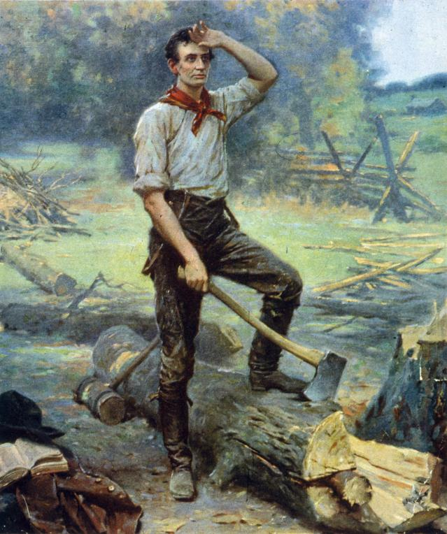
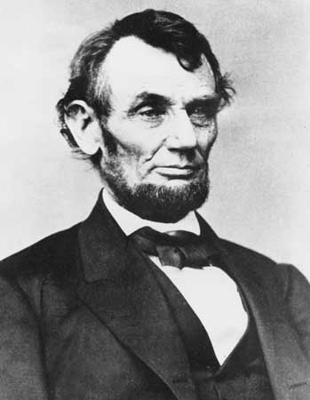

by Nikki Veen
What state was Abraham Lincoln Born?
He was born in Kentucky.
How tall was Abraham Lincoln?
He was 6'4" tall!
What tool is most commonly associated with Lincoln?
An axe.

Although William Seward was the pre-convention favorite for the Republican presidential nomination in 1860, Lincoln won on the third ballot. With Hannibal Hamlin as his running mate, Lincoln was elected the 16th president on November 6, 1860, defeating Douglas, John Bell, and John C. Breckinridge.
In February of 1861 the Lincolns left by train for Washington, D.C. The president-elect was now wearing a beard at the suggestion of an 11-year-old girl. Lincoln was sworn in on March 4, 1861.
After Lincoln's election, many Southern states, fearing Republican control in the government, seceded from the Union. Lincoln faced the greatest internal crisis of any U.S. president. After the fall of Ft. Sumter, Lincoln raised an army and decided to fight to save the Union from falling apart. Initially, Lincoln anticipated a short conflict; he called for 75,000 volunteers to serve for three months. Despite enormous pressures, loss of life, battlefield setbacks, bickering among his Cabinet members, generals who weren't ready to fight, assassination threats, etc., Lincoln stuck with this pro-Union policy for four long years of Civil War. On January 1, 1863, the Emancipation Proclamation went into effect. This was Lincoln's declaration of freedom for all slaves in the areas of the Confederacy not under Union control. Also, on November 19, 1863, Lincoln gave his famous Gettysburg Address which dedicated the battlefield there to the soldiers who had perished. He called on the living to finish the task the dead soldiers had begun.
Lincoln's domestic policies included support for the Homestead Act. This act allowed poor people in the East to obtain land in the West. Also, Lincoln signed legislation entitled the National Banking Act which established a national currency and provided for the creation of a network of national banks. In addition, he signed tariff legislation that offered protection to American industry and signed a bill that chartered the first transcontinental railroad. Lincoln's foreign policy was geared toward preventing foreign intervention in the Civil War.
In 1864 Ulysses S. Grant was named general-in-chief of the armies of the United States. The South was slowly being worn down. Lincoln was reelected president with Andrew Johnson as his running mate. Lincoln defeated the Democrat George McClellan on November 8, 1864. On April 9, 1865, General Robert E. Lee surrendered to Grant. Two days later Lincoln addressed a crowd outside the White House. Among other things, he suggested he would support voting rights for certain blacks. This infuriated a racist and Southern sympathizer who was in the audience: the actor John Wilkes Booth who hated everything the president stood for.
On Good Friday, April 14, 1865, the Lincolns attended a play entitled Our American Cousin at Ford's Theatre. During the performance Booth arrived at the theater, entered the State Box from the rear, and shot the president in the back of his head at about 10:15 P.M. Lincoln was carried across the street to the Petersen House where he passed away the next day at 7:22 A.M. This was the first presidential assassination in American history, and the nation mourned its leader. His death was the result of the deep divisions and hatred of the times. Lincoln's body was taken to Springfield by train, and he was buried in the Lincoln Tomb in Oak Ridge Cemetery on May 4, 1865. Because of the assassination, Reconstruction took place without Lincoln's guidance and leadership.
“Four score and seven years ago our fathers brought forth on this continent, a new nation, conceived in Liberty, and dedicated to the proposition that all men are created equal.”
— November 19, 1863 Gettysburg Address
“The man does not live who is more devoted to peace than I am. None who would do more to preserve it.”
— February 21, 1861 Address to the New Jersey General Assembly
“In times like the present, men should utter nothing for which they would not willingly be responsible through time and eternity.”
— December 1, 1862 Message to Congress